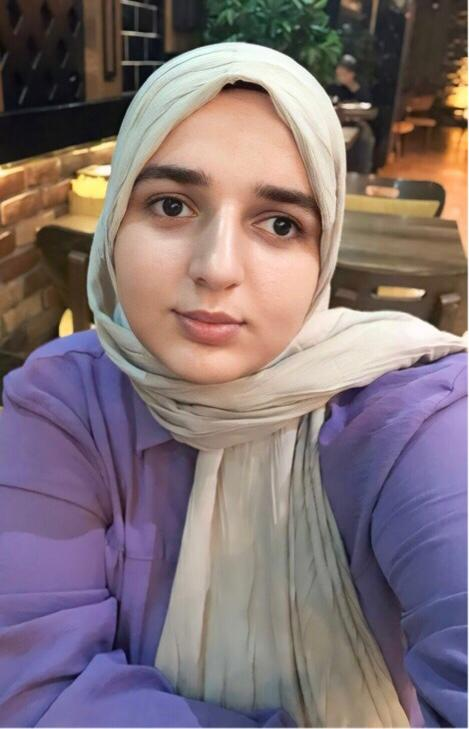

Merhaba, Ben Ayşegül Çakıldere
Yazılım Mühendisi
Fırat Üniversitesi - 4. Sınıf Öğrencisi
Hakkımda

Ayşegül Çakıldere
Yazılım Mühendisi
Fırat Üniversitesi Yazılım Mühendisliği - 4. Sınıf
Frontend geliştirme ve UI/UX tasarımı konularında tutkulu bir yazılımcıyım. Modern web teknolojileri ile kullanıcı dostu arayüzler geliştiriyorum.
HTML5
CSS3
JavaScript
React
UI/UX
Unity
C#
AR Development
Projelerim

ARPoly - Eğitimde AR Projesi
ARPoly, eğitimde artırılmış gerçeklik teknolojisini kullanan yenilikçi bir projedir. Öğrencilerin geometrik cisimleri 3 boyutlu olarak görselleştirmelerini ve uzamsal düşünme becerilerini geliştirmelerini sağlar. Proje, özellikle uzaktan eğitim sürecinde öğrencilerin geometri derslerini daha interaktif ve eğlenceli hale getirmeyi amaçlamaktadır.
Öne Çıkan Özellikler:
- 3B geometrik şekillerin AR teknolojisi ile görselleştirilmesi
- Şekilleri döndürme, büyütme ve inceleme imkanı
- Geometrik şekillerin özelliklerini interaktif olarak keşfetme
- Kullanıcı dostu arayüz ve kolay kullanım
Unity
C#
AR Foundation
3D Modelleme
Vuforia
UI/UX